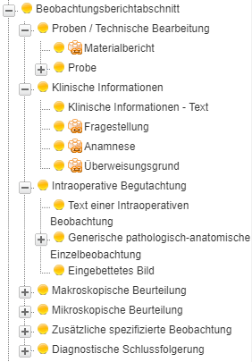
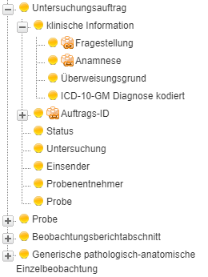
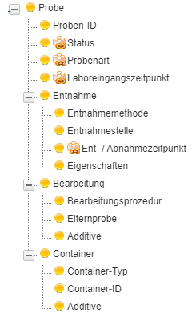

MII IG Modul Patho
2027.0.0-ballot.rc1 -

MII IG Modul Patho
2027.0.0-ballot.rc1 -

MII IG Modul Patho - Local Development build (v2027.0.0-ballot.rc1) built by the FHIR (HL7® FHIR® Standard) Build Tools. See the Directory of published versions
Histologische und zytologische Untersuchungen spielen bei einem Großteil von schwerwiegenden medizinischen Diagnosen eine entscheidende Rolle. Autoptische Untersuchungen sind sowohl wertvolle Quelle für neue medizinische Erkenntnisse (siehe COVID-19), als auch zentrale Elemente einer klinischen Qualitätskontrolle.
Zentrales Dokument und Gegenstand dieses Moduls ist dabei der Befundbericht einer Pathologieeinrichtung. Für zeitkritische Anwendungen, z.B. eine intraoperative Schnellschnittdiagnostik, können auch schon vorläufige Ergebnisse interessant sein. In der Regel werden aber sowohl in der Patientenversorgung als auch in der Forschung die finalen Pathologiebefundberichte verwendet. Aufgrund des breiten Einsatzes des Moduls Pathologie-Befund wird auf eine Beschreibung von einzelnen Anwendungen innerhalb der einzelnen Konsortien verzichtet.

Pathologiebefundberichte sind als klinische Dokumente zusammengefasste, überwiegend in Textform vorliegende Ergebnisse einer klinisch beauftragten, in einer Pathologieeinrichtung durchgeführten histo- und zytomorphologischen sowie molekularen Untersuchung oder Gruppen derartiger Untersuchungen mit einer zusammenfassenden diagnostischen Bewertung. Diese Ergebnisse entstehen aus Beobachtungen an den klinisch eingesandten Proben eines Patienten. Im Sinne der ISO/IEC-Norm 17020 handelt es sich dabei um Inspektionsberichte, den "Pathologisch-anatomischen Begutachtungen". Die freitextlich formulierten Untersuchungsergebnisse können zusätzlich durch strukturierte Kodierungen ergänzt (semantisch annotiert) werden. Dabei gilt: Jede strukturierte Kodierung muss auch als Text lesbar sein, aber nicht jede Textinformation muss kodiert werden.
Zum klinischen Auftrag sowie zu den einzelnen Untersuchungen werden jeweils verschiedene Daten erfasst, unter anderem auch, ob es sich um vorläufige oder abschließenden Untersuchungsbefunde handelt (Status) und verschiedene im Kontext wichtige Zeitpunkte.
Im Verlauf einer pathologischen Untersuchung von der Entnahme des Präparates beim Patienten bis zur Übermittlung des Befundes an den Einsender werden verschiedene Zeitstempel festgehalten.
Für jede Untersuchung gibt es einen Zeitpunkt, zu dem eine Beobachtung in der Probe (z.B. das Ergebnis einer immunhistochemischen Analyse) mutmaßlich der Eigenschaft im Patienten entsprach. Wenn der Zeitpunkt der Präparatentnahme angegeben ist, wird meist dieser Zeitpunkt verwendet. Andernfalls wird zumeist behelfsmäßig der Probeneingang in der Pathologieeinrichtung gewählt. Dieses Element ist wichtig, um verschiedene Analysen im Zeitverlauf sortieren zu können. Die Präzision soll ausreichen, um auch Minuten zu erfassen.
Das Gültigkeitsdatum gibt an, wann der Bericht freigegeben wurde. Da ein Pathologiebefundbericht häufig mehrere Analysen umfasst, sollte die Befundfreigabe mit einem expliziten Datum versehen sein.
Es gibt – prinzipiell – zwei Möglichkeiten, einen Pathologiebefundbericht in HL7 FHIR abzubilden:
Dabei gilt:
Es wurde daher nach einer Lösung gesucht, die einen Ausgleich zwischen den beiden Ansätzen (FHIR-Dokument und DiagnosticReport) schafft. Dabei wurde das Entwurfsmuster für „DiagnosticReport" in R5 berücksichtigt, bei dem die Beziehung zwischen „DiagnosticReport" und „Composition" von der Ressource „DiagnosticReport" zur Ressource „Composition" verläuft.
Kurz zusammengefasst:
Das Dokumenten-Bundle repräsentiert den rechtsverbindlich signierbaren Bericht und enthält alle Daten, die den Bericht definieren.
Ein wesentlicher Teil des Pathologiebefundberichtes sind die ärztlichen diagnostischen Interpretationen und die Kommentare, mit denen der befundende Pathologe dem Einsender hilft, die richtigen Schlüsse aus den Untersuchungsergebnissen zu ziehen. Die eigentliche Interpretation wird im Wesentlichen als Freitext abgespeichert. Auch hier sind zusätzliche strukturierte Kodierungen möglich.
Ein sog. synoptischer strukturierter Pathologiebefundbericht (College of American Pathologists, Cancer protocol templates), entsprechend einem Strukturierungslevel 3 oder höher (Ellis DW, Srigley J. Does standardised structured reporting contribute to quality in diagnostic pathology? The importance of evidence-based datasets. Virchows Arch. 2016 Jan;468(1):51–9.), liegt vor, wenn die Untersuchungsergebnisse in einer definierten Frage-Antwort-Struktur organisiert werden.
Mitunter beziehen sich einzelne Kommentare nicht auf den gesamten Befund, sondern nur auf einzelne Beobachtungen (z.B. „am ehesten handelt es sich …“, „… entspricht am ehesten einem …“). Diese Kommentare sollten als Notiz gespeichert werden.
Der Pathologiebefundbericht gliedert sich in mehrere Abschnitte, die jeweils die pathologisch-anatomischen Beobachtungen bezüglich ihrer Untersuchungs- und Interpretationsebene zusammenfassen.

Mit dem Untersuchungsauftrag des Einsenders werden den Patholog:innen zusammen mit den entnommenen Proben auch Informationen zu diesen, zur Anamnese, zu dem aktuellen Untersuchungsanlass und zu den gewünschten Untersuchungen mitgeteilt. Diese werden in der Regel recht allgemein gehalten, da es sich bei diesem Auftrag um eine Konsultation und nicht um eine Auftragsleistung handelt. Diese Informationen werden im Pathologiebefundbericht in einem speziellen Abschnitt (s.o.) referenziert.
Aus einem (oder mehreren) Untersuchungsaufträgen zu einer Patientin wird mit den zugehörigen Proben in der Pathologieeinrichtung ein Fall, das "Service Event", kreiert. Die Fallnummer wird meist als Eingangsnummer (Accession number) bezeichnet.
In der Regel wird ein Untersuchungsauftrag mit zugehöriger Probe zum Service Event bzw. Fall in der Pathologieeinrichtung, auch als Accession oder Eingang bezeichnet. Die zugehörige Probe kann in bestimmten Konfigurationen auch eine Probe aus einem bereits zurückliegenden, abgeschlossenen Fall sein, zu welcher ein anderer als der Primärauftraggeber eine weitere Untersuchung beauftragt, z.B. eine molekularpathologische Untersuchung oder eine vergleichende morphologische Untersuchung mit weiteren Vorbefunden. Am zugrundeliegenden Fall-Paradigma ändert sich dabei nichts: Dem Untersuchungsauftrag muss eine Probe zugeordnet sein, egal ob diese gleichzeitig mit dem Auftrag eingesandt wurde oder bereits in der Pathologieeinrichtung vorhanden ist.

Als Einsendung (Probe) wird das vom Einsender von Patient:in während einer diagnostischen oder therapeutischen Prozedur entnommene Körpermaterial (Gewebe, Zellen, Flüssigkeiten) bezeichnet, welches das Wurzelelement aller Proben im Bearbeitungsprozess ist. Die bei dessen Bearbeitung im Pathologielabor entstehenden Einheiten (Block, Gewebsschnitt) sind ebenfalls Proben. Im Rollenverständnis besteht zwischen diesen Bezeichnungen kein prinzipieller Unterschied. In der Regel befinden sich Proben in oder auf Containern (Einsendungsgefäß, Kapsel, Objektträger/Deckglas), meist in Verbindung mit Additiven (Fixationsmittel, Gewebshärter, Eindeckungsmedien)
